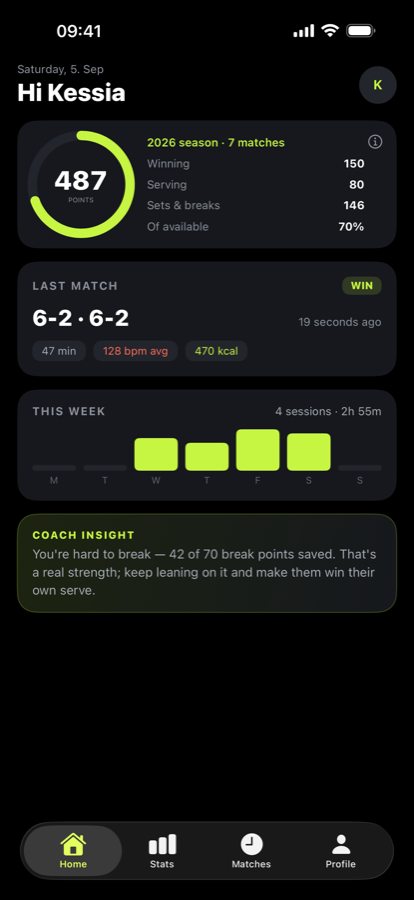
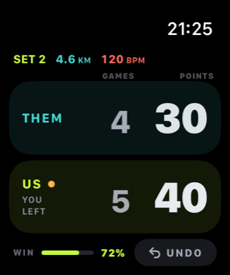
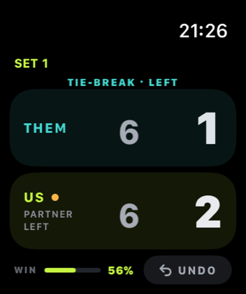
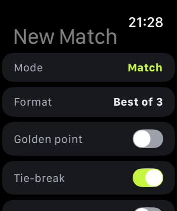
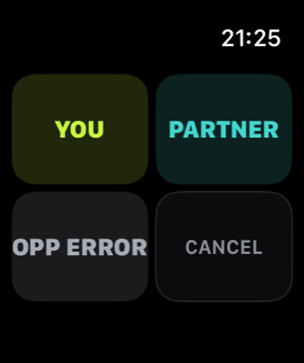
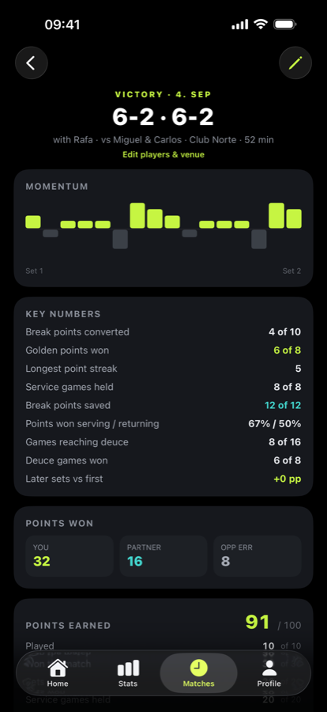
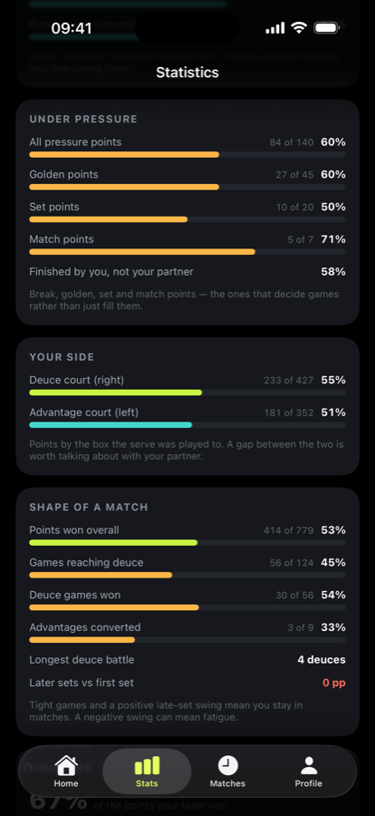
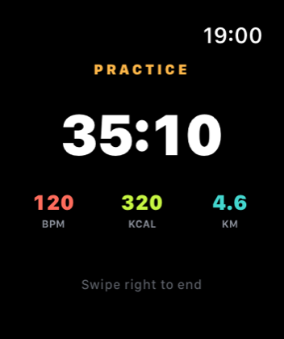
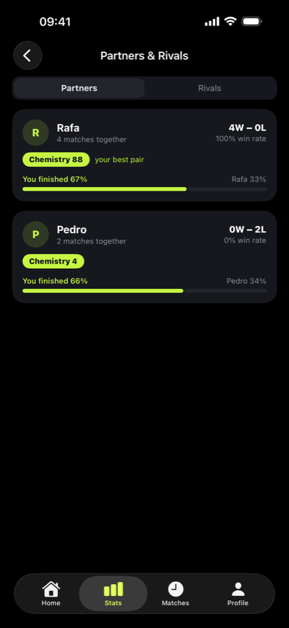

A scoreboard built for the court — big zones you can hit without looking. Then stats that come from points you actually played.


Tap the bottom for your pair, the top for theirs. The zones are big enough to hit while you're catching your breath and walking back to position.


Turn it on and winning a point asks one quick question: was that you, your partner, or their mistake? It's the difference between knowing you won and knowing why.


Not a skill grade somebody invented. Serving and returning, the points that decide games, and which side of the court you're strong on — all derived from the points you tapped.

Start a practice session and the scoreboard disappears. You get a clock and your effort — heart rate, calories and distance — with nothing to tap between drills.

Every match remembers who you played with and where. Over a season that turns into the thing padel groups argue about most — settled.

Every match is worth up to 100 points, and nothing can ever take them away. Win and you bank a lot. Play well and lose and you still bank plenty — which is the whole idea.
Two tie-breaks lost, not a single service game dropped. The scoreline says you lost twice — the points say you were the better server all evening.
We don't collect anything. There's no account to make, no analytics, no tracking, and nothing of yours reaches us — because none of it is ever sent anywhere except your own iCloud.
Read the privacy policy — it's about a page.
Every feature here came from something that annoyed us on court. Found something missing? Tell us — that's how the last few got made.